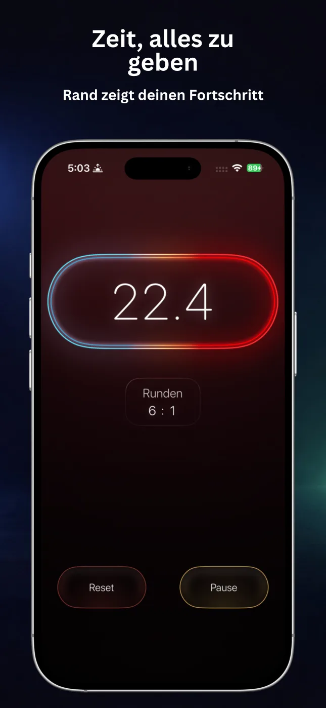
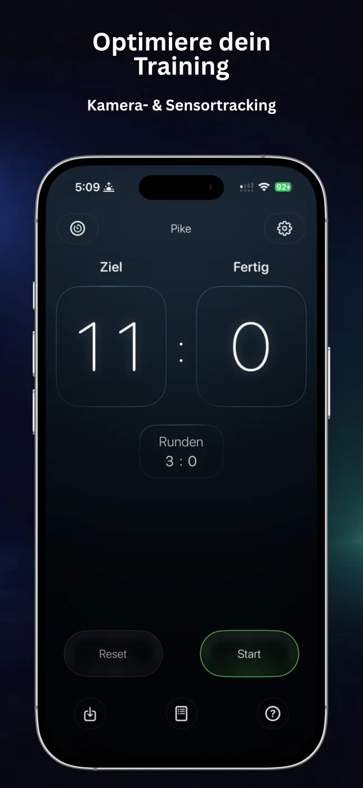
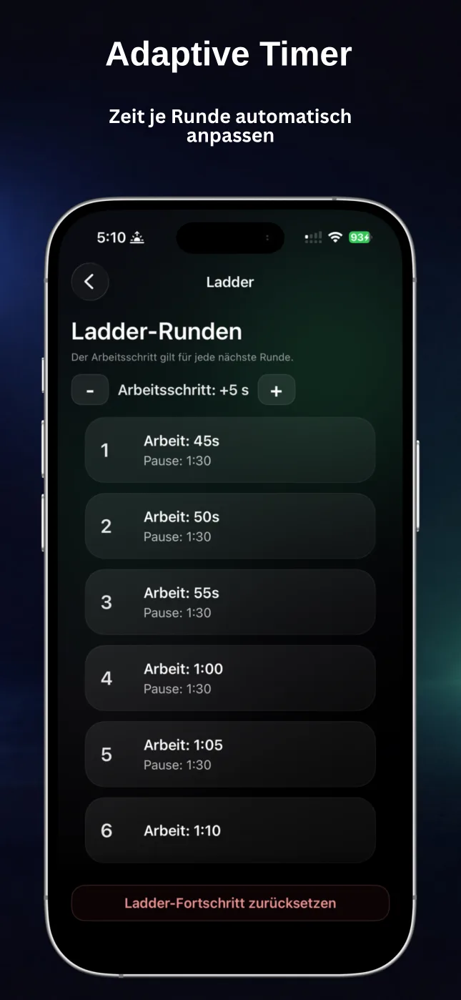
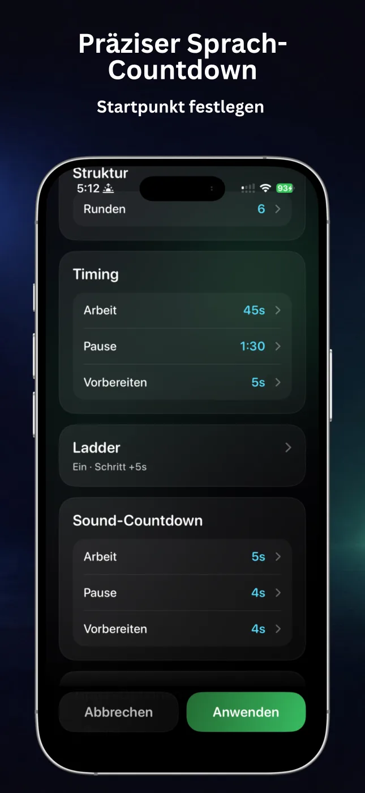
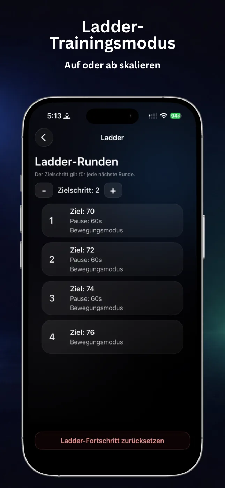
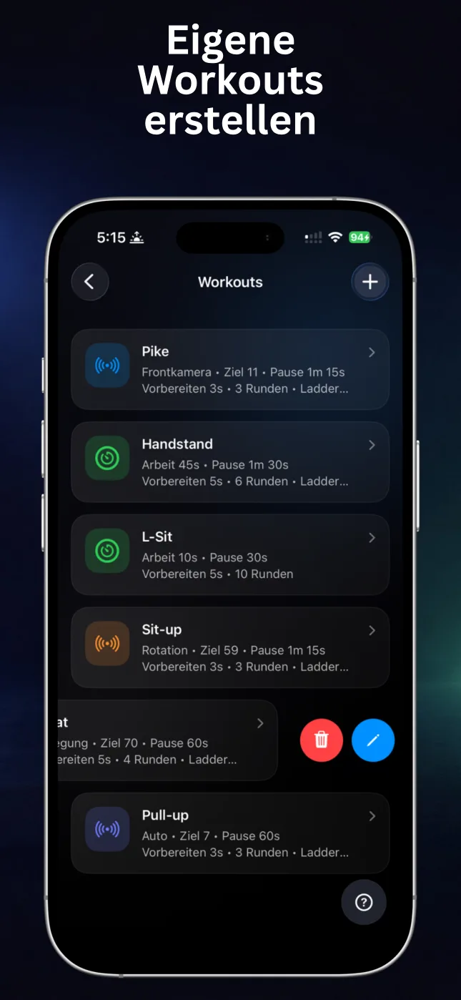

Automatische Zählung
Nutze Bewegung, Rotation, automatische Erkennung oder die Frontkamera, um unterstützte Übungen mitzuzählen.
RepChime verbindet einen präzisen Intervalltimer mit automatischer Wiederholungszählung. Plane deine Einheit, beginne dich zu bewegen und überlasse deinem iPhone den Rhythmus.

RepChime hält die Trainingsstruktur sichtbar und die Bedienung einfach – egal, ob du nach Zeit oder Wiederholungsziel trainierst.
Nutze Bewegung, Rotation, automatische Erkennung oder die Frontkamera, um unterstützte Übungen mitzuzählen.
Lege Arbeit, Pause, Vorbereitung und Runden für kurze Zirkel, lange Holds oder wiederholbare Intervalle fest.
Steigere oder reduziere Zeit und Wiederholungsziele von Runde zu Runde für geplante Progression.
Bleib beim Training statt am Bildschirm: mit Countdown-Tönen, Rundenhinweisen und optionaler Pro-Sprachführung.
Speichere Timer- und Zähler-Setups, bearbeite Favoriten und starte die passende Einheit in wenigen Schritten.
RepChime Pro kann die Trainingszeit per Live Activity auf Sperrbildschirm und Dynamic Island sichtbar halten.
Große Zahlen, klare Phasen und eine dunkle Oberfläche bleiben zwischen den Sätzen gut lesbar.





Beide Modi folgen demselben klaren Ablauf: Einheit konfigurieren, Start drücken und dem visuellen und akustischen Rhythmus folgen.
Erstelle HIIT-, Mobilitäts- oder Hold-Einheiten mit getrennten Zeiten für Arbeit, Pause und Vorbereitung. Ergänze Runden, Countdowns und Zeitleitern.
Lege ein Ziel fest und wähle Bewegungs-, Rotations-, Auto- oder Frontkamera-Erkennung. Unterstützt werden Liegestütze, Sit-ups, Klimmzüge und Kniebeugen.
RepChime ist eine Fitness-App für das iPhone mit einem konfigurierbaren HIIT-Timer und einem zielbasierten Zähler, der unterstützte Wiederholungen über Gerätesensoren oder Frontkamera erfassen kann.
Die aktuelle App-Store-Beschreibung nennt Liegestütze, Sit-ups, Klimmzüge und Kniebeugen. Die verfügbaren Erkennungsmodi unterscheiden sich je nach Übung; die Frontkamera ist für Liegestütze verfügbar.
Ja. Timer- und Zähler-Vorlagen lassen sich speichern. RepChime Pro bietet mehr Vorlagenplätze und den vollständigen Bearbeitungsablauf.
Nein. Trainingsvorlagen und Einstellungen sind für die lokale Speicherung auf deinem Gerät vorgesehen. Apple verarbeitet Käufe und Berechtigungsstatus.
Plane das Training einmal. RepChime übernimmt Zeit, Zählung und Hinweise, während du dich auf die Bewegung konzentrierst.
RepChime kostenlos laden